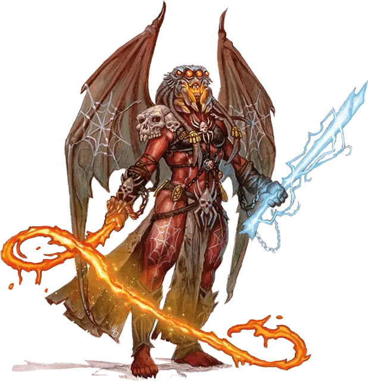

Кэмлэш
Camlash
Огромное Исчадие (Демон), хаотично-злое, именной НИП

Класс Доспеха 19 (природный доспех)
Хиты 325 (26к12 + 156)
Скорость 40 футов, летая 80 футов
| мод | спас | ||
|---|---|---|---|
| СИЛ | 26 | +8 | +14 |
| ЛОВ | 15 | +2 | +2 |
| ТЕЛ | 22 | +6 | +12 |
| мод | спас | ||
|---|---|---|---|
| ИНТ | 20 | +5 | +5 |
| МДР | 16 | +3 | +9 |
| ХАР | 22 | +6 | +12 |
Сопротивление урону холод, электричество; дробящий, колющий, рубящий от немагических атак
Иммунитет к урону огонь, яд
Иммунитет к состояниям отравление
Чувства истинное зрение 120 футов, пассивное Восприятие 13
Языки Бездны, Телепатия 120 фт.
Опасность 19 (22000 опыта)
Бонус мастерства +6
Особенности
Предсмертная агония. Когда Кэмлэш умирает, она взрывается, и все существа в пределах 30 футов от неё должны совершить спасбросок Ловкости Сл 21, получая урон огнём 70 (20к6) при провале, или половину этого урона при успехе. Взрыв воспламеняет горючие предметы в этой области, которые никто не несет и не носит.
Сопротивление магии. Кэмлэш совершает с преимуществом спасброски от заклинаний и прочих магических эффектов.
Паучья аура. Пространство вокруг Кэмлэш кишит от крошечных кусачих пауков, которые магическим образом появляются и исчезают. В начале каждого хода Кэмлэш все существа в пределах 5 футов от нее получают 10 (3к6) урона ядом и должны преуспеть в спасброске Телосложения Сл 21, иначе становясь парализованными до начала следующего хода Кэмлэш.
Действия
Мультиатака. Кэмлэш совершает одну атаку Огненным кнутом и одну атаку Электрическим мечом. Она может заменить любую из этих атак Телепортацией.
Огненный кнут. Рукопашная атака оружием: +15 к попаданию, досягаемость 30 футов, одна цель. Попадание: 25 (5к6 + 8) урона огнём, и цель должна преуспеть в спасброске Силы Сл 21, иначе её подтянет на 25 футов к Кэмлэш.
Электрический меч. Рукопашная атака оружием: +15 к попаданию, досягаемость 10 футов, одна цель. Попадание: 21 (3к8 + 8) рубящего урона плюс 13 (3к8) урона электричеством.
Телепортация. Кэмлэш магическим образом телепортируется вместе со всем несомым и носимым снаряжением, на расстояние до 120 футов в свободное пространство, которое она видит.
Описание
Кэмлэш — это чудовищная демоница, покрытая бесчисленными множествами крошечных роящихся пауков, которые появляются и исчезают случайным образом.
Лолс не присутствует лично в Пандемониуме, вместо этого передав управление своими легионами Кэмлэш. Генерал балор специализируется на управлении группами верных драуков и мутировавших арахнидов. Последователи Лолс пополнили ряды войск Кэмлэш, несмотря на часто встречающуюся вражду между ними и драуками. Вместе они сражаются во имя Лолс.